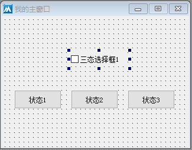
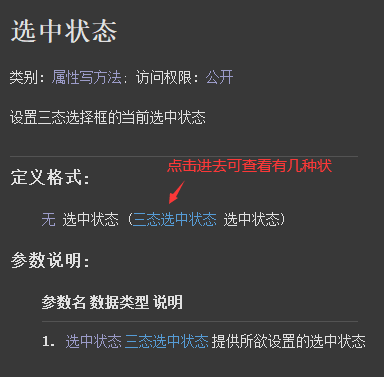
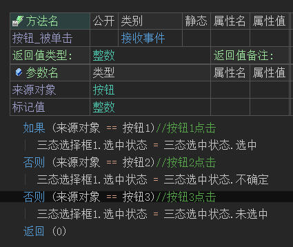
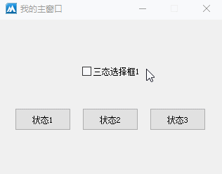

[上一章] [下一章]
作者：创世魂
本组件和选择框的区别在于，本组件具有三种状态。 注意：本组件继承了 “选择框”和 “按钮基础类” 的所有方法。
本组件和选择框的区别在于，本组件具有三种状态。
注意：本组件继承了 “选择框”和 “按钮基础类” 的所有方法。
界面设计如下图：
放三个按钮和一个三态选择框。 
放三个按钮和一个三态选择框。

帮助文档如下图：
通过本属性可以设置组件的三种状态，调用方式：“三态选中状态.XXX”. 
通过本属性可以设置组件的三种状态，调用方式：“三态选中状态.XXX”.

代码编写如下图：
三个按钮点击后分别设置三种不同的状态。 
三个按钮点击后分别设置三种不同的状态。

运行效果如下图：
最终可看到，三种状态除了可以通过代码设置外，还可以通过单击组件实现。 
最终可看到，三种状态除了可以通过代码设置外，还可以通过单击组件实现。
